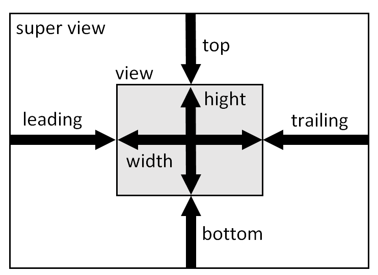
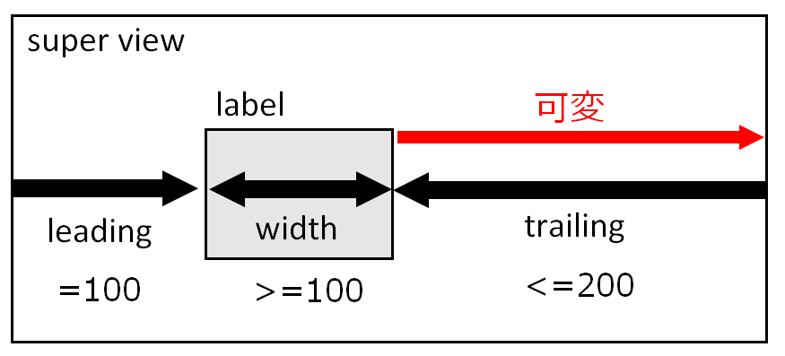

Auto Layout の基礎
macOS 10.14.6 / Xcode 11.3.1 / Swift 5
ビューにコントロールを配置するとき、コントロールの位置と大きさは、一般的にはコントロールの frameプロパティ（ビュー上の座標点とコントロールを格納する矩形領域のサイズからなる）により定義する。
iPhoneは機種によってスクリーンの大きさが異なるので、この方法をとるとコントロールがはみ出したり、または無駄な余白が生じたりする場合がある。
Auto Layoutoは従来型のコントロールの配置方法とは全く違う方法である。
この方法をとることにより、スクリーンの大きさが異なっても、コントロールが自動的に適正な位置に配置されるよう指定することができる。
基本的な考え方
簡単に言えば、Auto Layout を使いこなすには、制約（constraint）を理解すれば良い。
例えば、スパービューの中にひとつのビューを配置するとする。まず、水平方向の構成として、X軸は、(1) スーパービューの左端からビューの左端までの線分、(2) ビューの幅の線分、(3)ビューの右端からスーパービューの右端までの線分に３分割することができる。
このとき、これらの線分のうち二つの長さを固定すれば、スーパービューの幅が変化したとしても、その変化は残りのひとつの線分の増減によって吸収することができる。
固定値がひとつでは、スーパービューの幅の変化を残りのどちらの線分で吸収したらよいかわからない。また三つとも固定値であれば、幅の変化に対応できない。いずれも Auto Layout の定義としてはエラーである。
これは垂直向においても同様である。Y軸の線分は、
(1) スーパービューの上端からビューの上端までの線分、(2) ビューの高さの線分、(3)ビューの下端からスーパービューの下端までの線分に３分割できる。
以上で説明した特定の線分に固定値を割り当てることを「制約を設定する」という。水平方向、垂直方向の制約を組み合わせて、ビューを配置する例を次に示す。
設定の方法
ビューの四辺の端を表すキーワードは、左端は leading、右端は trailing、上端は top、
下端は bottom となる。

ビューの左端とスーパービューの左端の間隔を10ピクセルに固定する。
view.leading = superView.leading + 10
ビューの右端とスーパービューの右端の間隔を10ピクセルに固定する。方向があるのでマイナス値になる。
view.trailing = superView.trailing - 10
ビューの上端とスーパービューの上端の間隔を10ピクセルに固定する。
view.top = superView.top + 10
ビューの下端とスーパービューの下端の間隔を10ピクセルに固定する。方向があるのでマイナス値になる。
view.bottom = superView.bottom - 10
ビューの幅を100ピクセルに固定する。
view.width = 100
ビューの高さを100ピクセルに固定する。
view.height = 100
例１
水平方向はビューの両側に制約を設定し、ビューの幅を可変とする。垂直方向はビューの上下側に制約を設定し、ビューの高さを可変とする。スーパービューの大きさの変化に応じて中のビューのサイズが変化する。
左端の位置をスーパービューの右端からの長さで固定することもできる。この場合、ビューの幅を加えた長さを指定することになる。
view.leading = superView.trailing - 300
例２
水平方向はビューの左側と幅に制約を設定し、ビューの右側を可変とする。垂直方向はビューの上側と高さに制約を設定し、ビューの下側を可変とする。スーパービューの大きさの変化に応じてビューの右側と下側の余白の大きさが変化する。
例３
次の例では、水平方向と垂直方向の中心を固定し、ビューの幅と高さを指定している。スーパービューの大きさが変わってもビューは常に中心に表示される。
view.centerX = superView.centerX
view.centerY = superView.centerY
例４
ビュー間の制約は、スーパービューとサブビューの間だけでなく、同じ階層のビュー間でも設定することができる。それを利用して、スーパービューの中に複数のビューを配置し連動させてみる。
次の例は、二つのビューが水平方向に並列していて、水平方向の制約はビューAの左側、ビューBの両側、およびビューBの幅に設定する。ビューAからビューBへと同階層のビュー間に制約を設定している。スーパービューの幅が変化すると唯一可変のビューAの幅が変化する。
また、ビューBの上側は、ビューAの上側と同じ高さになるよう制約を設定している。スーパービューの高さが変化すると、ビューAの高さとビューBの下の余白が変化する。

viewA.leading + superView.leading + L1
viewB.leading = viewA.trailing + L2
viewB.width = L3
viewB.trailing = superView.trailing - L4
viewA.top = viewB.top
サンプル アプリケーション
Auto Layoutによりビューとラベルを配置し、機種によって表示がどのように変わるか確認する。
iPhone 11 Pro max iPhone 8
ソースコード
Auto Layoutの定義は Interface Builderを利用するのが一般的かもしれないが、ここでは全てコードにより実装してみた。個人的にはこの方がおすすめだと思っている。警告等のサジェスチョンが得られないのはデメリットだが。
何を行なっているかはコードを追って確認してみてください。
[補足]
UILabelの幅の範囲指定
Auto Layoutでラベル（テキストフィールド）はやや特殊な動きをする。ラベルの幅に固定値を設定すると「Fixed width constraints may cause clipping.」という警告(注1)がでる。これは、ラベルに表示する文字列の長さは実行前には不定なので、場合によっては文字列が切れてしまいますよという意味。
この警告を消すためには、ラベルの幅を可変（greater than or equal to）にし、かつ、ラベルの左右いずれかの側の間隔を可変（less than or equal to）にする。これで文字列に長さに合わせてラベルの幅を可能な限り広げて表示することができる。
下記の図を参照。この例ではラベルの幅は最小100ピクセルだが、文字列の長さに応じてスーパービューの右端まで拡張される。

ただしこの警告は、ラベルに表示する文字列の長さがが事前にアプリケーションで分かっていて、設計において充分な幅をとっていれば無視しても構わないと考える。
（注1）Inrefface Builderのレイアウト設定のときにでるだけで、コードで指定した場合には出ない。
範囲指定の優先度
上記アプリケーションの下段に表示している「左側」「中央」「右側」はラベルである。両側のラベルは 70ピクセル固定とし、中央のラベルはスクリーンの幅に合わせその残余の幅にしている。
制約の設定は、警告をださないようにするには、
左のラベルが Widtth >= 70, 中央のラベルが Widtth >= 0, 右のラベルが Widtth >= 70 となる。
ただしこうすると同じ条件の設定が複数あり、デフォルトでは左側からラベルの幅が確定していくので次のような表示になってしまう。
これに対応する方法は、制約の実行の優先度を ContentHuggingPriority により個別に指定することである。本例では、両側のラベルの優先度を中央のラベルのそれより高くしている。こうすれば、まず両側のラベルが 70ピクセルで確定し、そのあと中央のラベルの幅が決まる。詳細はコードを参照のこと。